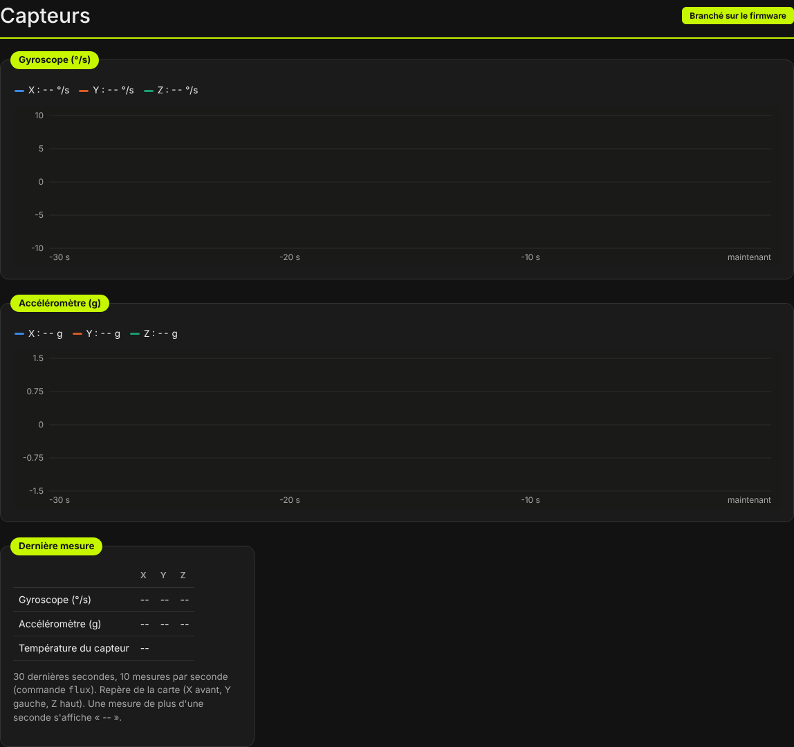
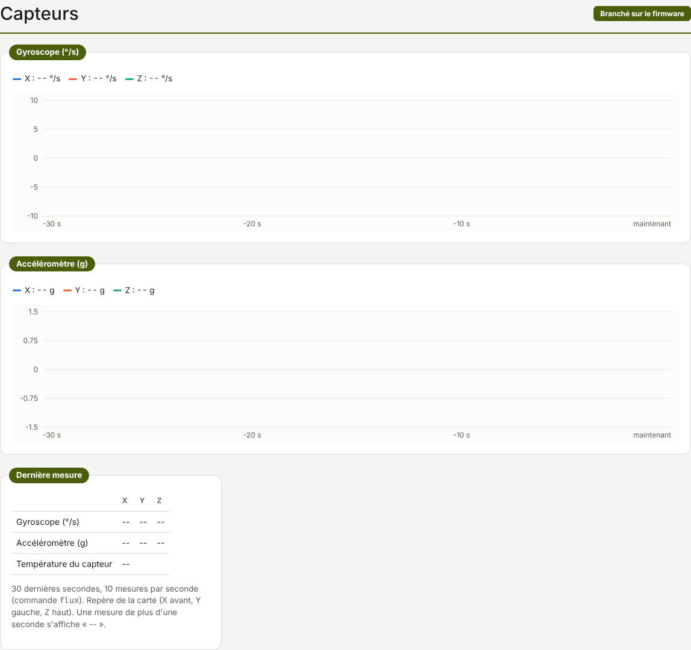

TRUEGLIDE
TRUEGLIDE Capteurs
L'onglet Capteurs (groupe Analyse) montre en direct le gyroscope et l'accéléromètre de la carte, sur les 30 dernières secondes, et leur dernière mesure.


Les graphes
- Gyroscope (°/s) : vitesse de rotation sur X, Y et Z.
- Accéléromètre (g) : accélération sur X, Y et Z.
L'axe du temps va de −30 s à « maintenant ». La légende au-dessus de chaque graphe donne la valeur actuelle de chaque axe.
Dernière mesure
Le tableau Dernière mesure donne le gyroscope (°/s) et l'accéléromètre (g) sur X, Y et Z, et la température du capteur. Une mesure de plus d'une seconde s'affiche « -- » : jamais une vieille valeur présentée comme actuelle.
Repère et fréquence
- Repère de la carte : X vers l'avant, Y vers la gauche, Z vers le haut.
- 10 mesures par seconde à l'écran (commande
flux). La carte, elle, lit son gyroscope bien plus vite ; pour voir un vol en détail, utiliser le journal de vol.
Pour l'inclinaison de la carte et le calibrage de l'accéléromètre : onglet Installation.